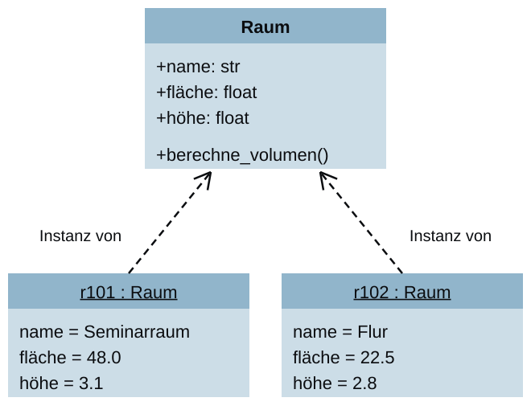
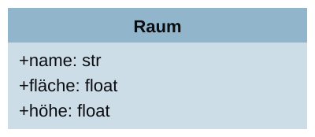
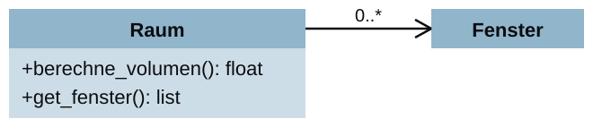
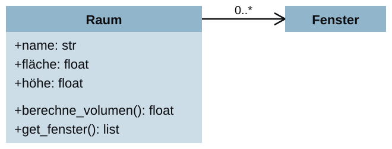
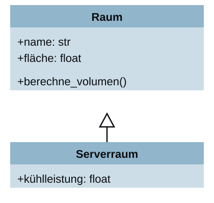
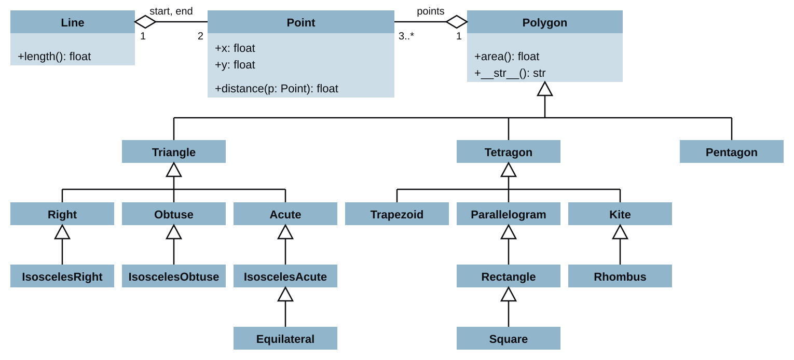
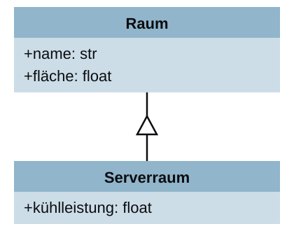

class Raum:
def __init__(self, name: str, fläche: float, höhe: float):
self.name = name
self.fläche = fläche
self.höhe = höheObjekte — Implementierung
Nothing is particularly hard if you divide it into small jobs.
— Henry Ford
TL;DR
Ein UML-Klassendiagramm aus S04 lässt sich schematisch in Python übersetzen: Die Klasse wird zu class, Attribute werden zu self.attribut in __init__, Methoden zu def … (self) und Assoziationen zu Instanzattributen. Eine KI erzeugt diesen Code, die Ingenieurin oder der Ingenieur verifiziert ihn gegen das Diagramm. Typische Fehler sind veränderliche Defaultwerte in __init__, fehlendes self und cls statt self.
Lernziele
Der Entwurf aus Objekte (S04) liegt als UML-Klassendiagramm vor; dieses Kapitel setzt ihn in Python um. Wir lesen aus dem Diagramm ab, welche Klassen, Attribute und Methoden entstehen, und übertragen sie schematisch in class, __init__, self und def. Dazu gehören Instanz- und Klassenattribute, Assoziationen als Instanzattribute, Kapselung und Vererbung. Gerade heute, wo eine KI den Code erzeugt, ist es wichtig den Code gut zu strukturieren, so dass er lesbar bleibt um Fehler zu finden.
Die Grundbegriffe Objekt, Klasse und Instanz kennen wir aus Objekte (S04). Wir wiederholen sie kurz, bevor wir den Entwurf in Python übersetzen.

Raum als Bauplan und zwei InstanzenDie Klasse Raum ist der Bauplan, die beiden Instanzen sind konkrete Räume mit eigenen Attributwerten. Für die Implementierung heißt das: Die Klasse legen wir einmal mit class fest, Instanzen entstehen später beliebig oft aus ihr.
Auch das Paradigma der Objektorientierung wiederholen wir nur kurz; die Einführung steht in Objekte (S04).
Eine Klasse legt fest, welche Attribute (Eigenschaften) und Methoden (Verantwortlichkeiten) ihre Objekte besitzen. In Python werden wir genau diese beiden Bestandteile aus dem Klassendiagramm ablesen und in Code übertragen.
Von UML zu Python
Das Mapping
Jedes Element des UML-Klassendiagramms besitzt eine direkte Python-Entsprechung. Der Klassenname wird zu class Raum:, ein Attribut wie name: str zur Zuweisung self.name = name, eine Methode wie f() → float zu def f(self) -> float: und eine Assoziation zu einem Fenster zu einem Instanzattribut, im Fall der Multiplizität 0..* zu einer Liste.
| UML-Element | Python-Syntax |
|---|---|
Klassenname Raum |
class Raum: |
Attribut name: str |
self.name = name |
Methode f() → float |
def f(self) -> float: |
Assoziation → Fenster (0..*) |
self.fenster = [] |
Diese Übersetzung ist das Kernziel der Implementierungsphase. Weil sie so schematisch ist, kann eine KI sie automatisch vornehmen; sie gelingt aber nur dann zuverlässig, wenn das Diagramm vollständig ist.
Klassenname und Attribute

Das Schlüsselwort class leitet die Klassendefinition ein, und der Name entspricht direkt dem UML-Klassennamen. Die Attribute des Diagramms legen wir im Konstruktor __init__ als self.attributname an. Dabei ist self eine Selbstreferenz auf die gerade erzeugte Instanz und muss stets der erste Parameter einer Methode sein.
class Raum:
def __init__(self,
name: str,
fläche: float,
höhe: float):
self.name = name
self.fläche = fläche
self.höhe = höheDer Konstruktor wird implizit aufgerufen, sobald wir den Klassennamen wie eine Funktion verwenden. Die Zuweisung self.name = name bedeutet, dass das neue Instanzattribut name der Instanz self den Wert des Parameters name erhält. Beide heißen gleich, sind aber nicht dieselbe Variable: Der Parameter existiert nur innerhalb von __init__, das Attribut dagegen so lange wie die Instanz. Da __init__ eine gewöhnliche Funktion ist, lassen sich auch Defaultwerte vereinbaren, etwa def __init__(self, x=0.0, y=0.0).
Methode und Assoziation

Methoden aus dem Klassendiagramm werden zu Funktionen innerhalb der Klasse, deren erster Parameter self ist. Über self erreicht die Methode die Attribute und die anderen Methoden derselben Instanz. Die Methode berechne_volumen multipliziert beispielsweise self.fläche mit self.höhe und liefert das Volumen des Raums zurück.
Assoziationen, also Beziehungen zu anderen Klassen, setzen wir als Instanzattribute um. Eine 0..*-Assoziation zu Fenster bedeutet, dass ein Raum beliebig viele Fenster besitzen kann, auch keines; wir initialisieren daher in __init__ eine leere Liste self.fenster = [], die später wachsen darf.
class Raum:
def __init__(self, ...):
...
self.fenster = []
def berechne_volumen(self) -> float:
return self.fläche * self.höhe
def get_fenster(self):
return self.fensterInstanzen erzeugen
Fassen wir die Syntax zusammen: __init__ legt die Attribute einer neuen Instanz an, und self steht stets für diese Instanz. Eine Instanz entsteht, indem wir den Klassennamen wie eine Funktion aufrufen und die Argumente für die Parameter des Konstruktors übergeben; das self lassen wir dabei weg, denn Python reicht es automatisch durch. Benannte Argumente machen die Bedeutung der Werte explizit und schützen vor vertauschten Werten, was bei drei Zahlenwerten wie Fläche und Höhe schnell passiert.
Die Instanz raum entsteht im folgenden Aufruf; der Zugriff auf ihre Attribute und Methoden erfolgt anschließend über die Punkt-Syntax, bei der links der Name des Objekts und rechts der Name des Attributs steht.
raum = Raum(name="Büro 1", fläche=30.0, höhe=2.8)raum.fläche30.0Der Wert 30.0 stammt aus dem Konstruktoraufruf; weitere Instanzen derselben Klasse erhalten ihre eigenen Werte, ohne die erste Instanz zu beeinflussen.
Instanz- und Klassenattribute
Instanzattribute werden in __init__ mit self.attributname definiert und können in jeder Instanz einen anderen Wert haben, so wie jeder Raum seine eigene Fläche besitzt. Klassenattribute stehen dagegen auf Klassenebene, außerhalb von __init__, und haben für alle Instanzen denselben Wert. Ein typisches Beispiel ist die Einheit einheit = "m²", die für jeden Raum gleichermaßen gilt.
class Raum:
einheit = "m²"
def __init__(self, fläche: float):
self.fläche = flächeDer Zugriff erfolgt in beiden Fällen über die Instanz.
Raum(30.0).einheit'm²'Vorsicht ist bei veränderlichen Klassenattributen geboten, also bei Listen und Dictionaries. Da sie nur einmal existieren und von allen Instanzen geteilt werden, wirkt sich eine Änderung durch eine Instanz auf alle anderen aus. Für Werte, die je Instanz verschieden sein sollen, gehört das Attribut deshalb in __init__.
Assoziationen als Instanzattribute
In Python werden Assoziationen als Instanzattribute umgesetzt. Die Multiplizität aus dem UML-Diagramm bestimmt dabei unmittelbar die Implementierung: Eine Beziehung 0..* wird zu einer Liste, die in __init__ als [] angelegt wird und mit append wächst. Die Multiplizität 1 verlangt, dass es immer genau ein verbundenes Objekt gibt, und wird deshalb zu einem Pflichtparameter des Konstruktors. Bei 0..1 ist die Beziehung optional; das Attribut erhält den Defaultwert None.
class Raum:
def __init__(self, name: str):
self.name = name
self.fenster = [] # → Fenster (0..*)
def add_fenster(self, fenster):
self.fenster.append(fenster)| UML | Python |
|---|---|
0..* |
[], wächst mit append |
1 |
Pflichtparameter |
0..1 |
Default None |
Die Beziehungsrichtung im Diagramm entscheidet, in welcher Klasse das Attribut definiert wird: Zeigt der Pfeil von Raum zu Fenster, kennt der Raum seine Fenster, nicht umgekehrt.
KI generiert die Raum-Klasse

Das vollständige Klassendiagramm von Raum enthält Attribute, Methoden und die Assoziation zu Fenster. Es dient als Spezifikation, die wir der KI zusammen mit einem kurzen Prompt übergeben: „Implementiere die Klasse Raum aus diesem UML-Diagramm.” Die Übersetzung selbst ist Routine; die Verantwortung für das Ergebnis liegt jedoch bei uns, weil die KI nur wiedergibt, was sie aus dem Diagramm herausliest.
Die generierte Klasse lesen
Die KI liefert eine Klasse wie die folgende. Bevor wir sie ausführen, lesen wir den Code und stellen uns Verständnisfragen, um die Verifikation zur Gewohnheit zu machen.
class Raum:
def __init__(self, name: str, fläche: float, höhe: float):
self.name = name
self.fläche = fläche
self.höhe = höhe
self.fenster = []
def berechne_volumen(self) -> float:
return self.fläche * self.höhe
def get_fenster(self):
return self.fensterDrei Fragen leiten das Lesen. Was gibt berechne_volumen() zurück? Das Produkt aus Fläche und Höhe, also das Volumen in Kubikmetern. Was gibt get_fenster() zurück? Die Liste der Fenster, die für einen neuen Raum noch leer ist. Und welche Anforderung des Entwurfs ist noch nicht erfüllt? Das lässt sich nur beantworten, indem wir den Code mit dem Diagramm und den Anforderungen abgleichen. Erst nach diesen Überlegungen führen wir den Code aus.
Raum("Büro 1", 30.0, 2.8).berechne_volumen()84.0Raum("Büro 1", 30.0, 2.8).get_fenster()[]Die Ausgaben bestätigen unsere Lesart: 84.0 Kubikmeter für 30 m² Grundfläche bei 2,8 m Höhe und eine leere Liste für die Fenster.
Verifizieren gegen das Diagramm
Die Verifikation läuft systematisch gegen das UML-Diagramm; der Code muss es vollständig abbilden, nicht mehr und nicht weniger. Jede Abweichung ist entweder ein Fehler im Code oder eine Unvollständigkeit im Diagramm, und beides müssen wir bewusst entscheiden.
Im agentischen Arbeitsablauf prüfen wir dazu vier Punkte. Erstens: Ist jedes Attribut aus dem Diagramm in __init__ vorhanden? Zweitens: Hat jede Methode die richtige Signatur, also die richtigen Parameter und den richtigen Rückgabetyp? Drittens: Ist jede Assoziation als Instanzattribut implementiert? Viertens: Ist Kapselung dort umgesetzt, wo das Diagramm sie durch Sichtbarkeitsmarker fordert?
Welche Klasse setzt das UML-Diagramm Raum korrekt um? Nur Variante A tut das. Variante B definiert fenster als Klassenattribut statt als Instanzattribut, sodass sich alle Räume dieselbe Liste teilen, und lässt außerdem self in der Methodensignatur weg. Variante C wirkt auf den ersten Blick korrekt, nutzt aber einen veränderlichen Defaultwert; dieser wird nur einmal bei der Definition ausgewertet, und alle Instanzen ohne eigenes Argument teilen sich deshalb dieselbe Liste.
# A: korrekt
class Raum:
def __init__(self, ...):
self.fenster = []
def berechne_volumen(self) -> float: ...
# B: Klassenattribut, self fehlt
class Raum:
fenster = []
def berechne_volumen() -> float: ...
# C: veränderlicher Defaultwert
class Raum:
def __init__(self, ..., fenster=[]):
self.fenster = fensterKapselung und Vererbung
Kapselung: Attribute schützen
Häufig möchten wir kontrollieren, ob und wie Attribute verändert werden und wer welche Methoden aufrufen darf. Python kennt dafür keine Zugriffsrechte, sondern Namenskonventionen für öffentliche, geschützte und private Attribute. Standardmäßig ist alles öffentlich, kann also von außen gelesen und verändert werden. Ein führender Unterstrich (_name) kennzeichnet per Konvention ein geschütztes Attribut, ein doppelter Unterstrich (__name) ein privates, das nur innerhalb der Klasse über self angesprochen werden soll. Im UML-Diagramm entsprechen dem die Sichtbarkeitsmarker + (öffentlich), # (geschützt) und - (privat).
Python setzt dabei kein echtes Zugriffsverbot um, sondern verwendet Name Mangling: Der Interpreter schreibt den Namen __fläche intern in _Raum__fläche um, sodass ein versehentlicher Zugriff über den ursprünglichen Namen von außen scheitert. Wer den umgeschriebenen Namen kennt, kann das Attribut dennoch lesen; ein echter Schutz ist das also nicht. Zum Lesen definieren wir eine Getter-Methode.
class Raum:
def __init__(self, fläche: float):
self.__fläche = fläche
def get_fläche(self) -> float:
return self.__flächeDer Lesezugriff über den Getter funktioniert, der direkte Zugriff von außen schlägt dagegen fehl.
Raum(30.0).get_fläche()30.0Raum(30.0).__fläche--------------------------------------------------------------------------- AttributeError Traceback (most recent call last) Cell In[11], line 1 ----> 1 Raum(30.0).__fläche AttributeError: 'Raum' object has no attribute '__fläche'
Der Getter liefert den Wert, während der direkte Zugriff auf __fläche mit einem AttributeError scheitert.
Die Hörsaalfrage greift die geometrischen Objekte aus Objekte (S04) wieder auf.

Serverraum ist ein spezieller RaumAus Objekte (S04) kennen wir die Vererbung im Klassendiagramm: Der Serverraum übernimmt von Raum Name und Fläche und ergänzt die kühlleistung. Wie sich das in Python ausdrücken lässt, zeigt der Abschnitt Vererbung weiter unten.
Kapselung, Vererbung und Polymorphismus sind Entwurfsentscheidungen aus Objekte (S04). Hier interessiert uns, wie sie sich in Python umsetzen lassen: Kapselung über Namenskonventionen und Getter, Vererbung über die Klammer hinter dem Klassennamen und Polymorphismus über das Überschreiben von Methoden.

Die Geometrie-Hierarchie aus Objekte (S04) zeigt den Nutzen der Vererbung im Großen: area() wird einmal in Polygon entworfen und von allen 16 Unterklassen übernommen.
Vererbung

Beim Deklarieren einer Unterklasse geben wir die Oberklasse in Klammern an: class Serverraum(Raum):. Die Unterklasse besitzt dann alle Attribute und Methoden der Oberklasse. Wollen wir einen eigenen Konstruktor definieren, müssen wir den Konstruktor der Oberklasse ausdrücklich mit super().__init__(...) aufrufen; andernfalls werden die geerbten Attribute nie initialisiert.
class Raum:
def __init__(self, name: str, fläche: float):
self.name = name
self.fläche = fläche
class Serverraum(Raum):
def __init__(self, name: str, fläche: float,
kühlleistung: float):
super().__init__(name, fläche)
self.kühlleistung = kühlleistungEine Instanz von Serverraum besitzt anschließend sowohl die geerbten Attribute als auch das neue.
Serverraum("Server 1", 12.0, 5.5).fläche12.0Serverraum("Server 1", 12.0, 5.5).kühlleistung5.5Unterklassen können außerdem Methoden der Oberklasse überschreiben und dasselbe Interface auf eigene Weise umsetzen; diese Fähigkeit heißt Polymorphismus.
Agentisches Arbeiten mit Klassen
KI-Fehler 1 — Mutable Default in __init__
Ein häufiger KI-Fehler ist ein veränderliches Objekt wie eine Liste oder ein Dictionary als Defaultwert eines Parameters. Python wertet den Defaultwert nur einmal aus, nämlich bei der Definition der Funktion. Alle Instanzen, die ohne eigenes Argument erzeugt werden, teilen sich deshalb dieselbe Liste. Das Problem ist nicht auf Klassen beschränkt, sondern betrifft jede Python-Funktion mit veränderlichem Defaultwert.
class Raum:
def __init__(self, fenster=[]): # fehlerhaft
self.fenster = fensterWir erzeugen zwei Räume und fügen nur dem ersten ein Fenster hinzu.
raum_a = Raum()
raum_b = Raum()
raum_a.fenster.append("Fenster Nord")Trotzdem enthält auch der zweite Raum das Fenster:
raum_b.fenster['Fenster Nord']Die korrekte Lösung verwendet None als Defaultwert und legt die Liste im Konstruktor an, sodass jede Instanz ihre eigene erhält.
class Raum:
def __init__(self, fenster=None):
if fenster is None:
fenster = []
self.fenster = fensterKI-Fehler 2 — Fehlendes self
Methoden müssen immer self als ersten Parameter haben. Fehlt er, kann die Methode nicht auf die Attribute der Instanz zugreifen, und schon der Aufruf scheitert. Dieser Fehler tritt bei KI-Systemen besonders dann auf, wenn Methoden aus freien Funktionen umgebaut werden, denn dort gibt es kein self.
class Raum:
def __init__(self, fläche: float, höhe: float):
self.fläche = fläche
self.höhe = höhe
def berechne_volumen(): # fehlerhaft
return fläche * höheBeim Aufruf übergibt Python die Instanz automatisch als erstes Argument; die Methode erwartet aber keines.
Raum(30.0, 2.8).berechne_volumen()--------------------------------------------------------------------------- TypeError Traceback (most recent call last) Cell In[20], line 1 ----> 1 Raum(30.0, 2.8).berechne_volumen() TypeError: Raum.berechne_volumen() takes 0 positional arguments but 1 was given
Die Fehlermeldung nennt genau diese Diskrepanz: Die Methode nimmt null Argumente entgegen, erhält aber eines. Mit self als erstem Parameter greifen wir über self.fläche und self.höhe auf die Instanzattribute zu.
KI-Fehler 3 — cls statt self
In Python ist cls die Konvention für den ersten Parameter von Klassenmethoden, die mit @classmethod dekoriert sind. Dort bezeichnet cls die Klasse selbst und nicht eine Instanz. KI-Systeme verwechseln cls und self gelegentlich, vor allem wenn sie zwischen den verschiedenen Methodentypen wechseln. Als Merkregel gilt: self gehört zur Instanzmethode, cls zur @classmethod, und eine Methode ganz ohne Instanz- oder Klassenbezug ist eine @staticmethod.
class Raum:
def __init__(self, fläche: float, höhe: float):
self.fläche = fläche
self.höhe = höhe
@classmethod
def berechne_volumen(cls): # fehlerhaft
return cls.fläche * cls.höheDer Aufruf schlägt fehl, weil fläche und höhe erst in __init__ an der Instanz entstehen und die Klasse selbst diese Attribute nicht besitzt.
Raum(30.0, 2.8).berechne_volumen()--------------------------------------------------------------------------- AttributeError Traceback (most recent call last) Cell In[22], line 1 ----> 1 Raum(30.0, 2.8).berechne_volumen() Cell In[21], line 8, in Raum.berechne_volumen(cls) 6 @classmethod 7 def berechne_volumen(cls): # fehlerhaft ----> 8 return cls.fläche * cls.höhe AttributeError: type object 'Raum' has no attribute 'fläche'
Die Lösung ist eine gewöhnliche Instanzmethode mit self und ohne Dekorator.
Drei Fragen für KI-generierten Klassencode
Drei Fragen bilden den Kern der Verifikation von KI-generiertem Klassencode. Die erste lautet, was die Klasse modelliert: Welche Entität oder welches Konzept wird abgebildet, und passt der Klassenname zur Domäne? Die zweite fragt, welche Anforderung sie implementiert: Liegt ein UML-Diagramm oder eine Spezifikation vor, und sind alle Attribute und Methoden des Entwurfs vorhanden? Die dritte untersucht, was schiefgehen könnte, etwa durch veränderliche Defaultwerte in __init__, ein fehlendes self oder Assoziationen, die nicht als Instanzattribute umgesetzt sind.
Wer diese Fragen routinemäßig stellt, entwickelt die Kompetenz, generierten Code kritisch zu lesen, statt ihn ungeprüft zu übernehmen. Mit dem folgenden Quiz lässt sich das Gelernte überprüfen.
shuffleQuestions: true
shuffleAnswers: true
### Wie übersetzt man das UML-Attribut `fläche: float` in Python?
- [x] Als `self.fläche = fläche` im Konstruktor `__init__`
- [ ] Als `fläche: float` direkt auf Klassenebene
- [ ] Als `def fläche(self): ...` als Methode
- [ ] Als `Raum.fläche = fläche` außerhalb der Klasse
### Wie übersetzt man die UML-Methode `berechne_volumen(): float`?
- [x] `def berechne_volumen(self) -> float:`
- [ ] `def berechne_volumen() -> float:`
- [ ] `def berechne_volumen(cls) -> float:`
- [ ] `berechne_volumen: float`
### Wie implementiert man eine UML-Assoziation `→ Fenster (0..*)` in Python?
- [x] Als `self.fenster = []` in `__init__` — eine Liste von Fenster-Objekten
- [ ] Als Klassenattribut `fenster = []`
- [ ] Als Pflichtparameter `fenster: Fenster` im Konstruktor
- [ ] Als Methode `def fenster(self):`
### Was ist das Problem mit folgendem Code?
```python
class Raum:
def __init__(self, fenster=[]):
self.fenster = fenster
```
- [x] Die leere Liste wird von allen Instanzen geteilt
- [ ] `fenster` muss ein Tupel sein
- [ ] Der Parameter `self` fehlt
- [ ] Der Konstruktor heißt falsch
### Welcher KI-Fehler steckt in diesem Code?
```python
class Raum:
def berechne_volumen():
return fläche * höhe
```
- [x] `self` fehlt als erster Parameter
- [ ] Der Rückgabetyp fehlt
- [ ] `def` ist das falsche Schlüsselwort
- [ ] Die Methode muss ein Klassenattribut sein
### Was ist der Unterschied zwischen `self` und `cls` in Python?
- [x] `self` referenziert die Instanz; `cls` referenziert die Klasse (für @classmethod)
- [ ] Beide sind identisch und beliebig austauschbar
- [ ] `cls` ist veraltet und wird nicht mehr verwendet
- [ ] `self` ist für private, `cls` für public Methoden
### Was ist der Konstruktor `__init__`?
- [x] Eine spezielle Methode, die beim Erzeugen einer Instanz aufgerufen wird
- [ ] Eine Methode zum Löschen einer Instanz
- [ ] Eine Klassenmethode zur Registrierung von Attributen
- [ ] Eine externe Funktion zum Initialisieren von Klassen
### Wozu dient `super().__init__(...)` in einer Unterklasse?
- [x] Um den Konstruktor der Oberklasse aufzurufen und deren Attribute zu initialisieren
- [ ] Um eine neue Instanz der Oberklasse zu erzeugen
- [ ] Um auf Klassenattribute der Oberklasse zuzugreifen
- [ ] Um die Unterklasse als Singleton zu registrieren
### Was beschreibt Kapselung?
- [x] Das Verbergen von Implementierungsdetails und Kontrolle über den Attributzugriff
- [ ] Das Vererben von Methoden an Unterklassen
- [ ] Das Überschreiben von Methoden in Unterklassen
- [ ] Das automatische Testen von Klassen
### Was prüft die Frage "Welche Anforderung implementiert diese Klasse?"
- [x] Ob alle Attribute und Methoden aus dem UML-Entwurf vorhanden sind
- [ ] Ob der Code schnell genug läuft
- [ ] Ob die Klasse Vererbung verwendet
- [ ] Ob der Klassenname in Python korrekt definiert ist
### Ordnen Sie die Zeilen, um die Klasse `Raum` korrekt zu definieren:
```python
# Raum mit Fläche 20.0 und Höhe 2.5 — Volumen berechnen
```
1. `class Raum:`
2. ` def __init__(self, fläche: float, höhe: float):`
3. ` self.fläche = fläche`
4. ` self.höhe = höhe`
5. ` def berechne_volumen(self) -> float:`
6. ` return self.fläche * self.höhe`
7. `raum = Raum(fläche=20.0, höhe=2.5)`
8. `print(raum.berechne_volumen())`
### Was beschreibt ein Instanzattribut?
- [x] Eine Eigenschaft, die in jeder Instanz unterschiedlich sein kann
- [ ] Eine Eigenschaft, die alle Klassen gemeinsam haben
- [ ] Ein Modul-Import
- [ ] Eine Klasse im Konstruktor